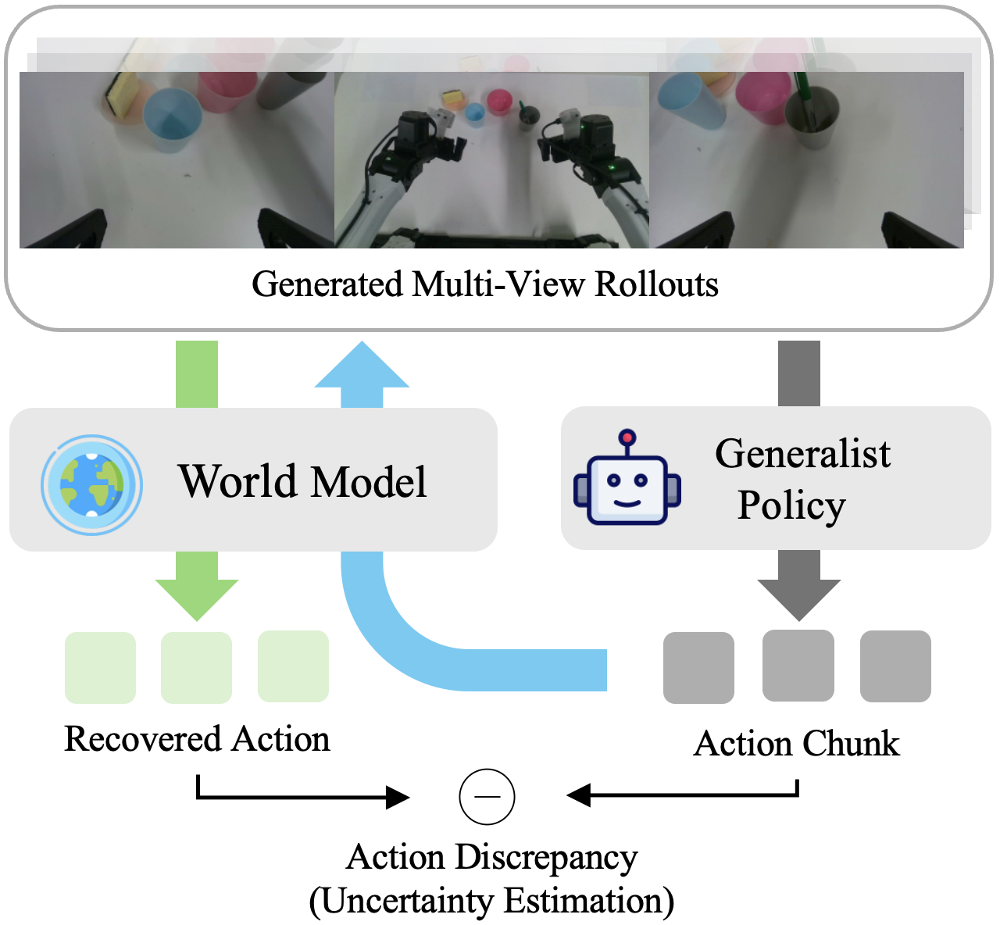
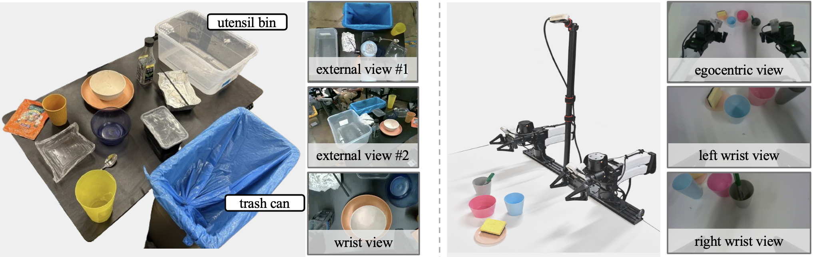
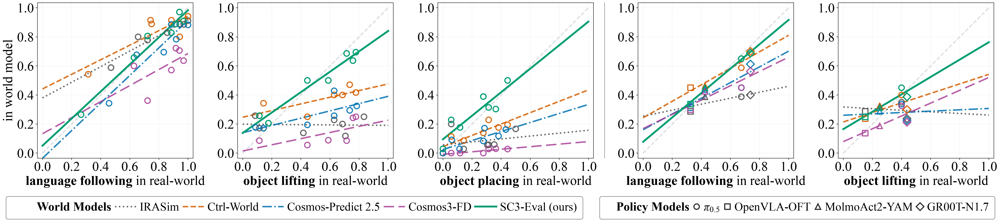

SC3-EvalEvaluating Robot Foundation Models via Self-Consistent Video Generation

Overview of SC3-Eval. A generalist policy is
evaluated in closed loop within a world model that generates
multi-view observations conditioned on the policy's predicted
action chunks. These observations are fed back to the policy to
predict subsequent actions. The same world model also recovers
action chunks from the generated observations through its inverse
dynamics mode. The discrepancy between the predicted and recovered
actions provides an uncertainty score for each chunk, enabling
early termination of unreliable rollouts.
Interactive Rollouts Visualization
Select an embodiment and task to compare a real-world rollout with
the corresponding world-model rollout.
Select a combination to view rollouts.
Policy Evaluation Results
Evaluation Setup
We evaluate policies on UR5 table-bussing and YAM object-picking,
using synchronized multi-view observations as inputs to both the
policies and the world model.

Closed-loop Policy Evaluation Correlation Graph
Predictions from SC3-Eval align more closely
with the ideal y = x line, particularly
for object lifting on both platforms and object placing on UR5.
Policy Evaluation Correlation on UR5
Policy Evaluation Correlation on YAM

Uncertainty Visualization
Inverse-dynamics uncertainty acts as a test-time consistency signal
for terminating unreliable imagined rollouts.
Prompt: pick up blue bowl and put it in bin
Loading uncertainty visualization...
Prompt: pick up chip bag and throw it away
Loading uncertainty visualization...
Ablation Study
Cross-view consistency and inverse dynamics both contribute to
evaluator fidelity.
Cross-View Consistency
We compare online world model rollouts with and without
cross-view inpainting mode. When the robot moves outside of the
workspace and returns, cross-view consistency helps the model
better recover the scene within the workspace for the wrist
camera.
w/o cross-view inpaintingw/ cross-view inpainting
Inverse Dynamics
We compare offline world model rollouts with and without inverse
dynamics (ID) joint training. ID joint training prevents rollouts
from drifting away from the ground-truth rollout.